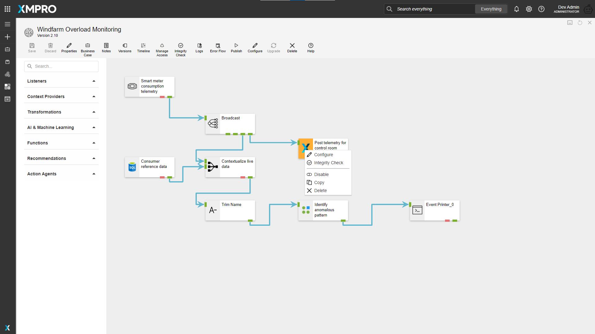
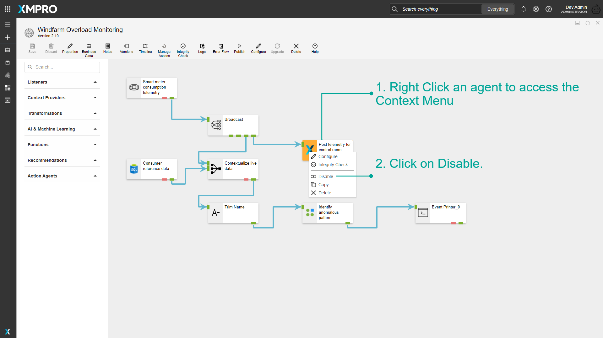
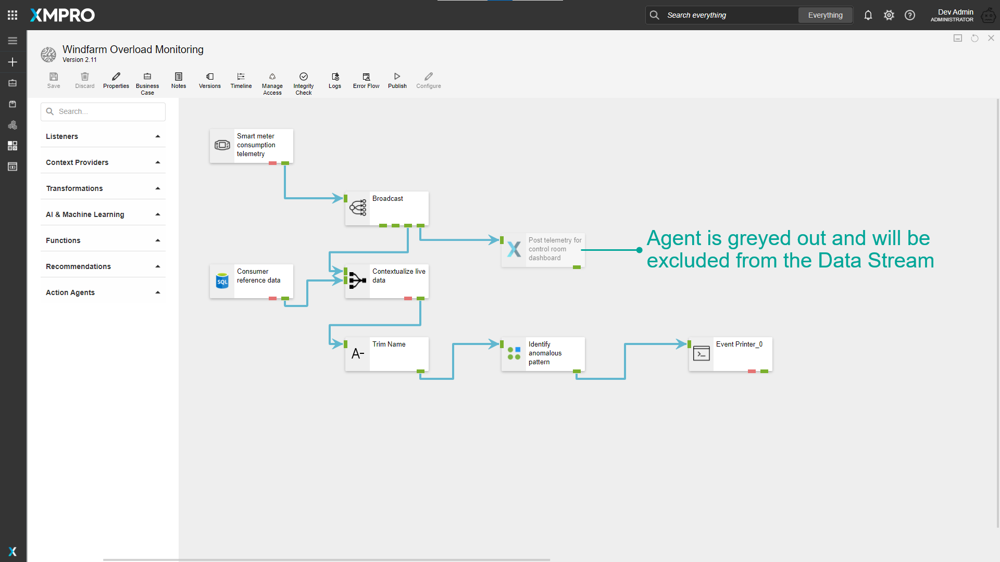
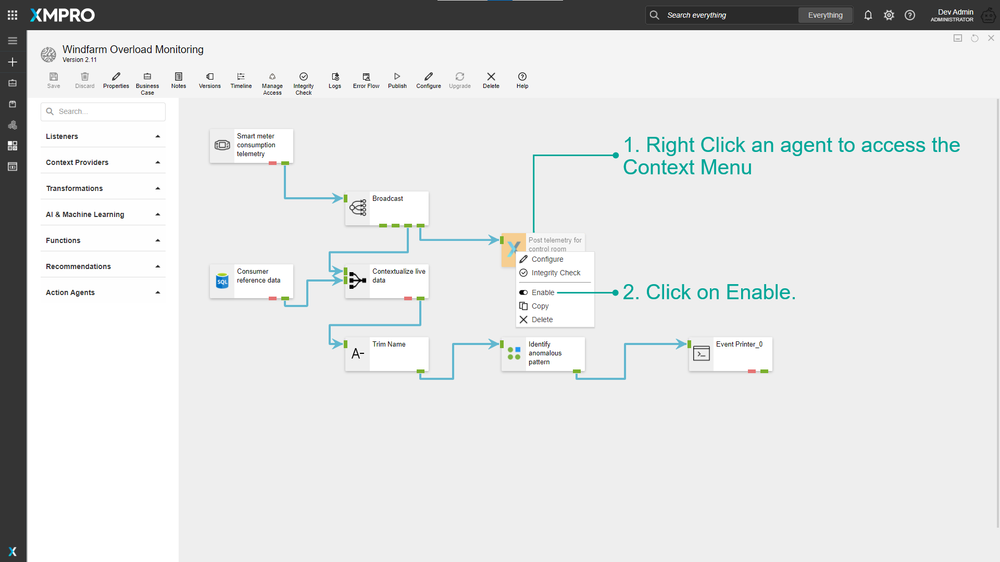
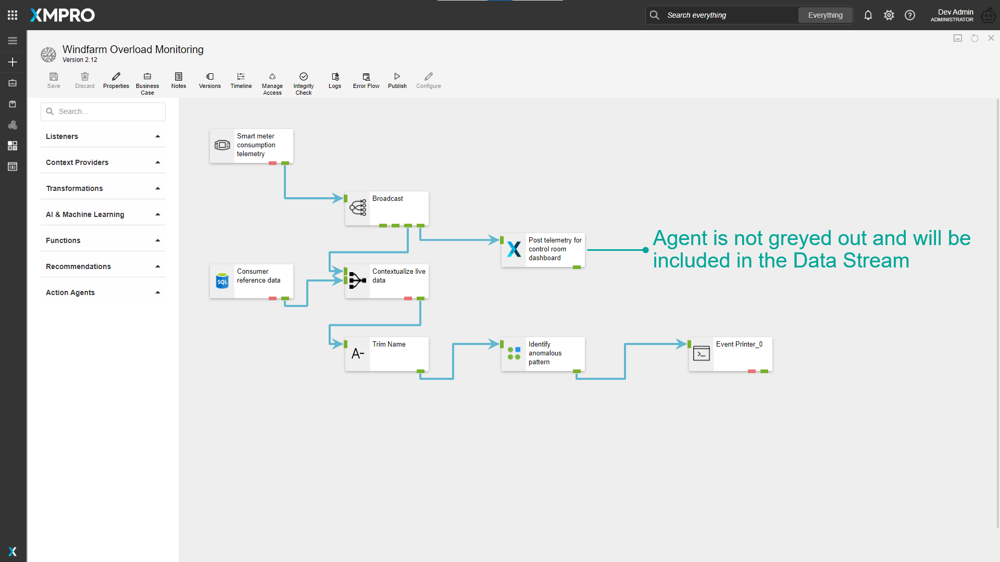
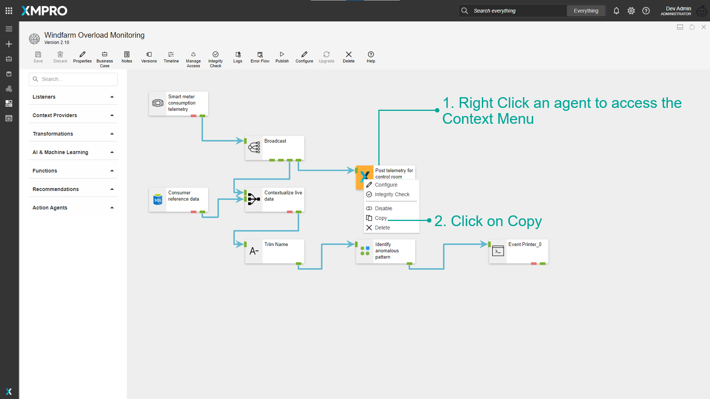
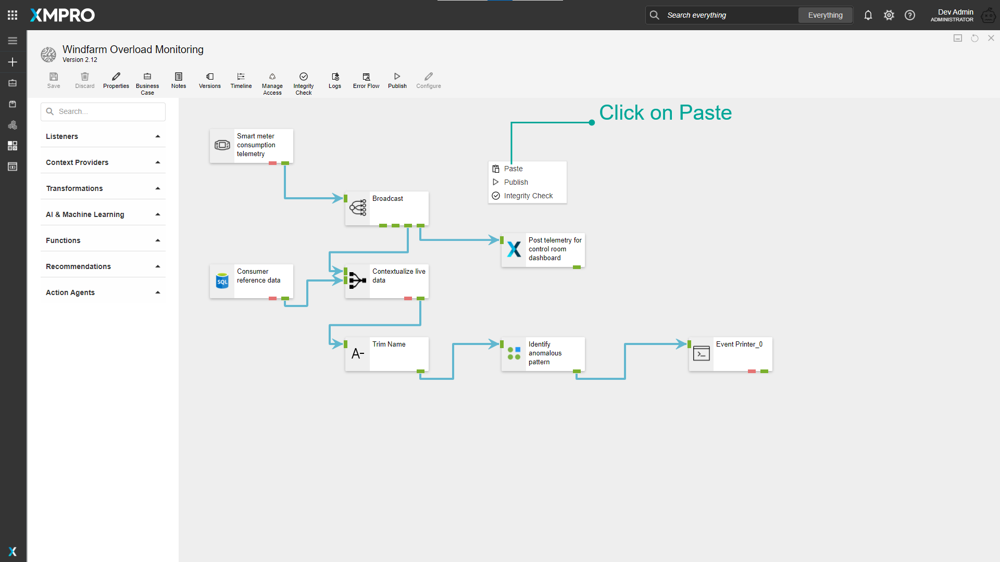

Context Menu
The Right Click Menu or the Context Menu is the menu, which appears when you right-click on the Stream Object in Data Stream. This menu gives you added functionality by offering you actions you can take with the Stream Object.

Configure
You can configure the Stream Object through the Context Menu.
See the Stream Object Configuration article for more details on Agent Configuration.
Integrity Check
You can run an Integrity Check on the agent through the Context Menu.
See Verifying Stream Integrity article for more details on Integrity Check.
Disable/Enable
You can disable/enable a Stream Object through the Context Menu.
Disable a Stream Object
Stream Objects can be disabled in a Data Stream. Disabled Stream Objects will be excluded from the output when the Data Stream is published.

Observe that the Disabled Stream Object is now greyed out.

Warning
Agents with no entry points and multiple entry points cannot be disabled.
Enable a Stream Object
Disabled Stream Objects can again be enabled in a Data Stream. Enabled Stream Objects will be Included in the output when the Data Stream is published.

Observe that the Stream Object is not greyed out.

Copy
You can copy a Stream Object and Paste it on the canvas.

Click anywhere on the canvas and right-click.

Delete
You can Delete a Stream Object using the Context Menu.
Last modified: May 28, 2025